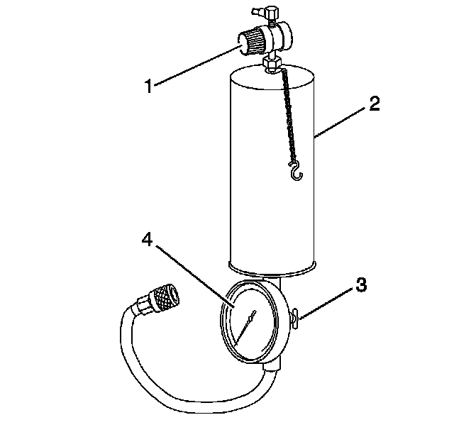

Fuel Injector Cleaning
FUEL INJECTOR CLEANING
TOOLS REQUIRED
- J 37287 Fuel Line Shut-Off Adapters
- J 35800-A Fuel Injector Cleaner
- J 42873-1 3/8 Fuel Line Shut-Off Valve
- J 42873-2 5/16 Return Pipe Shut-Off Valve
- J 42964-1 3/8 Fuel Pipe Shut-Off Valve
- J 42964-2 5/16 Fuel Pipe Shut-Off Valve
NOTE:
- GM Top-Engine Cleaner is the only injector cleaning agent recommended. Do not use other cleaning agents, as they may contain methanol which can damage fuel system components.
- Under NO circumstances should the top engine cleaner be added to the vehicles fuel tank, as it may damage the fuel pump and other system components.
- Do not exceed a 10 percent cleaning solution concentration. Higher concentrations may damage fuel system components. Testing has demonstrated that exceeding the 10 percent cleaning solution concentration does not improve the effectiveness of this procedure.
IMPORTANT:
- Vehicles with less than 160 km (100 mi) on the odometer should not have the injectors cleaned. These vehicles should have the injectors replaced.
- During this procedure you will need a total of 960 ml (32.4 oz) of cleaning solution. That is 2 tanks of solution for the J 35800-A. Other brands of tools may have a different capacity and would therefore require more or less tanks to complete the procedure. You must use all 960 ml (32.4 oz) of solution to ensure complete injector cleaning.

1. Obtain J 35800-A (2).
2. IMPORTANT: Make sure the valve at the bottom of the canister (3) is closed.
For US dealers, empty 2 pre-measured GM Top-Engine Cleaner containers, 24 ml (0.812 oz) each, GM P/N 12346535, into the J 35800-A.
3. For Canadian dealers, measure and dispense 48 ml (1.62 oz) of Top-Engine Cleaner, Canadian P/N 992872, into the J 35800-A.
4. If you are using any other brand of tank you will need a total of 96 ml (3.24 oz) of Top-Engine Cleaner mixed with 864 ml (29.16 oz) of regular unleaded gasoline.
5. Fill the injector cleaning tank with regular unleaded gasoline. Be sure to follow all additional instructions provided with the tool.
6. Electrically disable the vehicle fuel pump by removing the fuel pump relay and disconnecting the oil pressure switch connector, if equipped.
7. Disconnect the fuel feed and return line, if equipped, at the fuel rail. Plug the fuel feed and return line, if equipped, coming off the fuel rail with J 37287, or J 42964-1, and J 42964-2 or J 42873-1, and J 42873-2 as appropriate for the fuel system.
8. Connect the J 35800-A to the vehicle fuel rail.
9. Pressurize the J 35800-A to 510 kPa (75 psi).
10. Start and idle the engine until it stalls due to lack of fuel. This should take approximately 15-20 minutes.
11. Disconnect J 35800-A from the fuel rail.
12. Reconnect the vehicle fuel pump relay and oil pressure switch connector, if equipped.
13. Remove J 37287 or J 42964-1, and J 42964-2 or J 42873-1, and J 42873-2 and reconnect the vehicle fuel feed and return lines.
14. Start and idle the vehicle for an additional 2 minutes to ensure residual injector cleaner is flushed from the fuel rail and fuel lines.
15. Repeat steps 1-5 of the Injector Balance Test, and record the fuel pressure drop from each injector.
16. Subtract the lowest fuel pressure drop from the highest fuel pressure drop. If the value is 15 kPa (2 psi) or less, no additional action is required. If the value is greater than 15 kPa (2 psi), replace the injector with the lowest fuel pressure drop.
17. Add one ounce of Port Fuel Injector Cleaner, GM P/N 12345104 (Canadian P/N 10953467), to the vehicle fuel tank for each gallon of gasoline estimated to be in the fuel tank. Instruct the customer to add the reminder of the bottle of Port Fuel Injector Cleaner to the vehicle fuel tank at the next fill-up.
18. Advise the customer to change brands of fuel and to add GM Port Fuel Injector Cleaner every 5 000 km (3,000 mi). GM Port Fuel Injector Cleaner contains the same additives that the fuel companies are removing from the fuel to reduce costs. Regular use of GM Port Fuel Injector Cleaner should keep the customer from having to repeat the injector cleaning procedure.
19. Road test the vehicle to verify that the customer concern has been corrected.